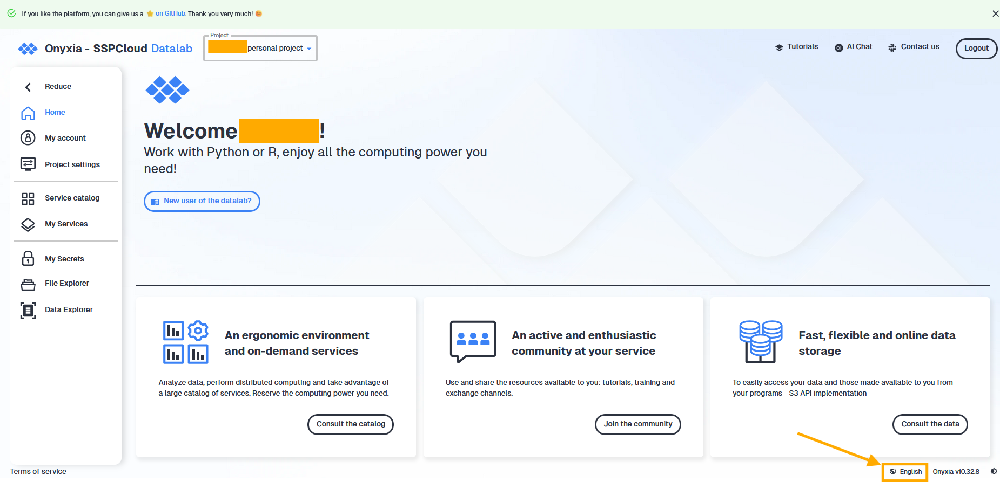
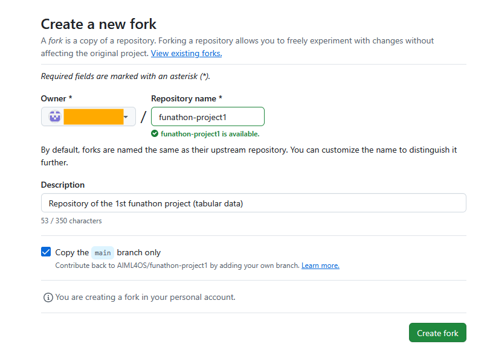

Project 1: predicting housing prices
| Technical level | Tasks |
|---|---|
| The whole project is written for beginners, relying on clues and solutions if needed. |
1 Introduction
The project focuses on predicting housing prices in the Paris area (Île-de-France region). We will explore how to perform inference using only a limited number of data sources, specifically transaction records and cadastral data. The reason for this choice is that data sources are widely available across many countries. At the end of this project, you will be able to :
- prepare your training data;
- train common machine learning (ML) models;
- evaluate your models by choosing the most suited metrics;
- use some tools to ensure the reproductibility of the process (monitoring the model, deploy an API).
2 Structure of the project
This project includes five steps (listed in the banner at the top of the page):
- data generation : how to generate synthetic data from confidential data - this step can be skipped;
- data preprocessing : how to prepare data input for the training of ML models;
- model fitting and evaluation with two different models : Random Forest (RF) and Gradient Boosting (GB);
- model logging with MLflow;
- deployment.
Every step is independent from the other : one will be able to start from the next step if a step is too difficult by looking at the fall-back call-out note at the beginning of each page or by looking at the code stored in the intermediaite_solutions folder.
The final script is stored in the solution/ folder. A main.py script calls on other sub-scripts, following the different steps of the project. If you want to toy around with hyperparameters,
To run it, just run uv run solution/main.py and it will execute all the steps at once.
To run the final API, run uvicorn solution.app:app --reload.
3 Generalities about housing market in France
3.1 How to buy a property in France ?
A housing transaction is always formalized in front of a notary in France, who acts as a legal intermediary to ensure the transaction’s validity and compliance with civil law. The notary checks among other things that the property effectively belongs to the seller, calculates and collects the stamp duties (such as droits de mutation) based on the transaction’s details and the property’s characteristics.
After collecting these taxes, the notary forwards the details of the transaction to the fiscal administration, including the sale price, the identities of the buyer and seller, the property’s cadastral reference and the notarized document. The fiscal administration then records this information in its databases and updates the land registry to reflect the new ownership.
3.2 Specificity of the data set
Since 2019, the fiscal administration publishes all real estate transactions twice a year in open data format on data.gouv.fr. You can access and download the original datasets (Demande de Valeurs Foncières - DVF or request for property values) directly here (in French only - sadly 😞): data.gouv.fr/datasets/demandes-de-valeurs-foncieres.
Types of transaction stored:
What transaction is stored in the DVF dataset is a vast question. It’s key to remember that the first goal of the dataset is to collect taxes. The dataset therefore is not fully complete and does not contain all the housing transactions in France that we would be interested in (the dataset remains of very high value and one of the most complete source of transaction as of today). For example, transactions involving selling shares of a real estate investment company (or Sociétés Civiles Immobilières (SCIs)) are excluded from housing transaction data, as they are not considered housing transactions from a legal perspective. However, in the way these companies are used, transfering the ownership of a SCI is very similar to buying a property.
In addition, some transactions are registered in the data when they are of little interest to us. For example:
- The DVF records partial transaction, that is for example when a property is jointly owned and one of the owner sells its part to his/her brothers or sisters. The DVF dataset does not specify the share of ownership transferred, as only the total sale price is recorded ;
- The initial transfer of ownership from an individual to an SCI is recorded as a housing transaction, even if the SCI is usually owned by the same persons.
Geographic coverage of the data :
The dataset includes overseas territories such as Guadeloupe, Martinique, and Réunion, but excludes Alsace-Moselle (the departments of Bas-Rhin, Haut-Rhin, and Moselle). This exclusion is due to the local civil law (droit local), which applies in Alsace-Moselle because these territories were part of Germany from 1870 to 1918. It is not an issue as we will focus on the Paris region but keep this in mind if you want to play around with the data.
Geographical codes :
The French territory is split in 18 regions (excluding the special case of overseas collectivities). Each region is made of departments (101 departments nationwide). Each department is identified with a unique non numeric department code, such as 75 for Paris or 2A for southern Corsica.
The official geographic code — commonly referred to as the Insee code — is a unique five-digit identifier assigned by the National Institute of Statistics and Economic Studies (Insee) to each city, department, region and other administrative area. This code allows to uniquely identify a city (or equivalent) and remains constant even if the city’s name changes or if it merges with another municipality. The two first digits of the city’s Insee code is the department code. You can find the full COG data and documentation here: Insee - Code Officiel Géographique (COG) and in open data format here: data.gouv.fr - Code Officiel Géographique (COG).
In everyday life, the zip code is more frequent to Insee code. It means that if you search for a city with its Insee code on Google maps for example, Google maps won’t find it as it uses the zip code (or postal code). The zip code is not a reliable identifier for a city as multiple cities share the same zip code, and a single city may have several zip codes depending on its districts or neighborhoods.
For example, the city of Paris is identified by the department code 75, the Insee code 75056 (Paris itself), and is associated with multiple zip codes (e.g., 75001, 75002, etc.). Montrouge’s Insee code is 92049 and 92 is the department code of Hauts-de-Seine, where Montrouge is located.
In-depth details about the data is presented in the dedicated page.
4 Initialization of the project
4.1 Technical requirements
- You need to have an account on Insee’s Onyxia platform, called SSPCloud (for cloud platform for the French Official Statistical System). When you are on this webpage, you should see something similar to this image once you’re logged in. To change the language, you can do so on the bottom right part of the webpage (see the orange arrow on the screen shot below).

- You also need to have a Github account. Your Github credentials (username, email and token) should be registered in your Insee’s Onyxia account in the My account/Git tab.
4.2 Initialize your MLFlow service
Launch a MLflow service by clicking on the below button with your Onyxia account opened:
4.3 Fork the project with Git
First, you need to fork the funathons’s project on Github by clicking on this link. For convenience, please not to change the repository name. Write down the owner’s name OWNER_NAME for the next step.

4.4 Open a VS Code on SSPCloud
To launch the project, open a VS Code service with the following button: .
In the VS Code service, open a terminal (CTRL + MAJ + C or in the file menu go to Terminal > New Terminal). Clone the project repository with the following command after replacing OWNER_NAME with your name on Github from the previous step:
OWNER_NAME="AIML4OS" # Change your Github name here
git clone https://$GIT_PERSONAL_ACCESS_TOKEN@github.com/$OWNER_NAME/funathon-project1.git # do not change this lineThe project has the following structure :
- The
.qmdfiles and the_quarto.yamlfile are necessary to build the website; - The file
pyproject.tomldescribes the dependencies of the project (using uv); - The starting point is available in the
starting_pointfolder; - Intermediate solutions to the exercices are available in the
intermediate_solutionsfolder; - The final solution is available in the
solutionfolder.
4.5 Installation of dependencies
Install the project dependencies by running the following command in the terminal:
cd funathon-project1
uv syncIf you need to install a new package, run the following command :
uv add <dependency_name>When running commands in the terminal, make sure you are working from the root of the Git repository.
You can verify your current location by checking the terminal prompt: it should end with funathon2024_project1. If it does not, navigate to the correct directory using the cd command.
For example :
- good path ✅ :
onyxia@vscode-python-882151-0:~/work/funathon-project1$ - bad path ❌ :
onyxia@vscode-python-882151-0:~/work$ 4.6 Python interpreter configuration
After installing dependencies with uv, you need to configure the Python interpreter so that the installed packages are properly recognized. This will allow you to run Python scripts in parts, similar to working in a Jupyter notebook.
To do this, open the command palette Show and Run commands then select Python: select interpreter , or press Ctrl+Shift+P. Finally, enter the following path, which corresponds to the Python interpreter generated by uv :
/home/onyxia/work/funathon-project1/.venv/bin/python3.13